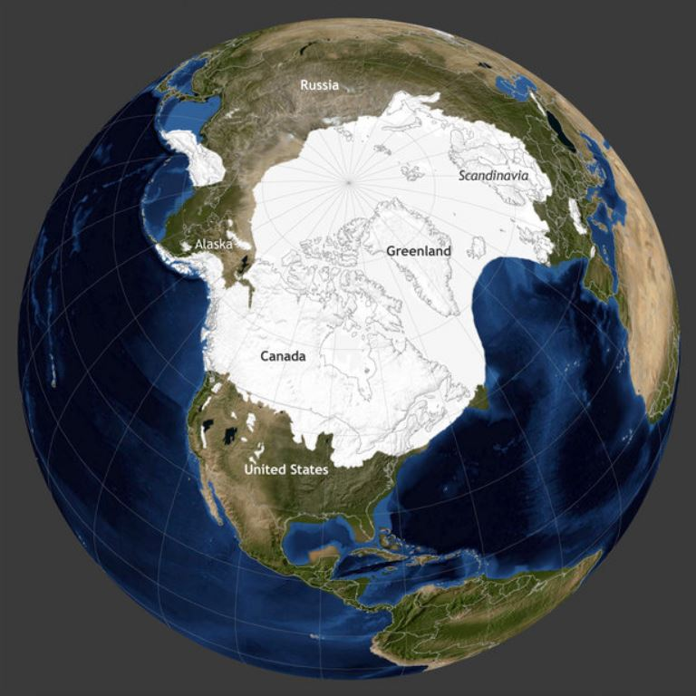
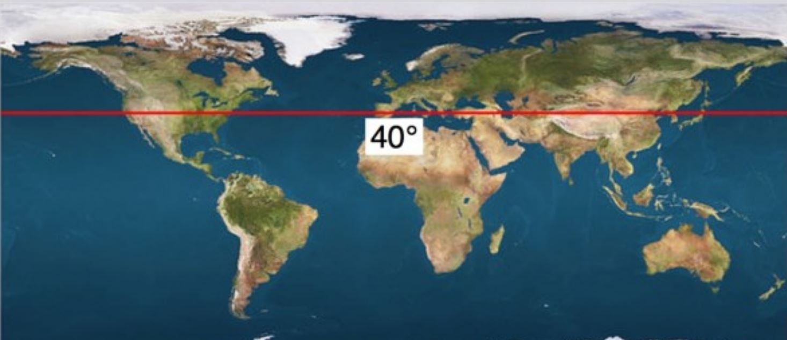

The Quaternary period is the current period of the Cenozoic Era in the geologic time scale. It is defined as the cyclic growth and decay of continental ice sheets and the most recent ice age. This period is also the time when recognizable humans exist.
This is the how the Quaternary period landmasses look like which should be very familiar as it is the current arrangement of Earth’s continents.
The Quaternary period is referred to as an ice age. There is a cycle of warm and cold periods, glacial and interglacial periods. Glacial periods last about 100 000 years that are interrupted by an interglacial period for about 10 to 15 thousand years. The last glacial period ended about 11 500 years ago and we, right now, are living through an interglacial period. The next ice age is predicted to begin within the next 1 500 years.
At one point, continental glaciers moved to the 40-degree latitude area, right around where we are, which caused a major extinction. This is where mammoths, saber-tooth cats, and many other animals became extinct.
Plants that live during this period include all types of bushes, shrubs, grasses, and any plant that you would see outside today. Animals that lived during this period include mammoths, mastodons, giant bison, (which are now extinct) and any animal you would see presently. Us humans also are living in the Quaternary period.